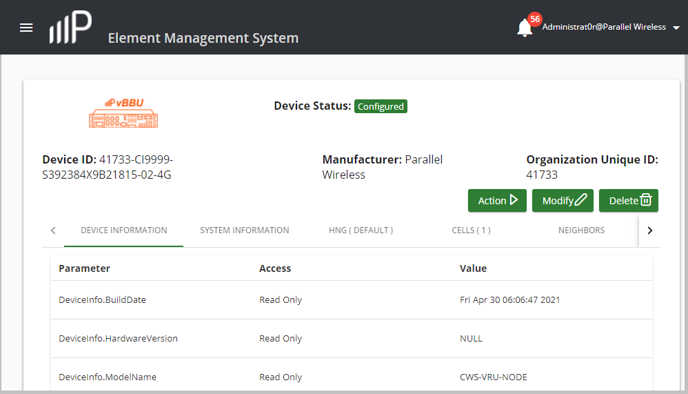

Configure a vNode
Use this task to configure a new device (discovered vBBU or vNode), its location, and select its profiles.

- In the navigation bar, click Devices > Create Devices.
-
In the Create New Device window, complete the following fields in the
Device Id: 41733 section:
NOTE: The prefix number: 41733 is part of the vBBU device identifier (ID) that is used for every vBBU or vNode that gets created in the system.
Field
Description
Device Id field This is a static field shows the Parallel Wireless Organization Uniquie Identifier (OUI), which is 41733. Device Product Class field Enter the device ID for the vNode. This is the HW Class ID that was configured in the WCT vBBU interface for a vNode that was selected there. For example: C19999 Device Serial Number field Enter the required serial number associated with the vNode. The first part of this number is the vBBU serial number (that can be found on the device itself), followed by the pre-provisioned vNode number (for example 03) and is followed next the cellular technology (2G or 4G). This ID is also the UniRAN ID for the vNode. For example: S3837C2X1113972-03-4G Device Name field The device name displays automatically as a combination the previous device ID, product class and serial number entries that were made.
For example: 41733-C19999- S3837C2X1113972
Select Device Type drop-down list Select vNode as the device type. vNodes are associated with a vBBU. Select Hosting vBBU drop-down list Select the vBBU device name that is hosting this vNode. Select Service Type drop-down list Select from the following available services: - LTE - This vNode provides 4G cell service.
- GSM - This vNode provides 2G cell service.
Select HNG Name drop-down list This field is initially blank. Select Default for the HetNet Gateway (HNG) name. Select GSM Service Name drop-down list (2G only) If you selected GSM as the service type, this field appears. Select the GSM service name. This drop-down list is populated with the names of the configured GSM device services that are available on the HNG when the HNG sends its configuration to the PW EMS. Select LTE Service Name drop-down list (4G only) If you selected LTE as the service type, this field appears. Select the LTE service name. For example venb01. This drop-down list is populated with the names of the configured LTE device services that are available on the HNG when the HNG sends its configuration to the PW EMS. Downlink Qos Profile drop-down list Select the downlink QoS Profile name that you specified DSCP maps that are applied to data traffic for access devices, such as an RRH from the HNG. Refer to the Configure Downlink QoS Shaping section for more information. Downlink Shaping Profile drop-down list Enter the downlink shaping profile name that you specified for categorizing uplink access network traffic. Refer to Create a Traffic Shaping Profile for more information. Downlink Bandwidth field Enter the downlink bandwidth for the vNode. Name of Region field Enter the region in which this vNode exists. For example, New Hampshire. Site field Enter a specific site location. For example, Darnstable, Powdunk Hills.
Multi Cell Neighbors check box Check the check box to indicate that a neighboring cell has multiple cells. -
Click the SYSTEM INFORMATION tab and complete the following
fields:
Field
Description
Device Version field The software version of the vBBU device displays by default. PKI Enabled checkbox Check the checkbox to enable PKI securty on the device. GSMConfig Select the name of the Global System for Mobile communications (GSM) profile that you created for a Converged Wireless System (CWS) access node which performs as a multi-carrier node that operates as a standalone base station or Remote-Radio Head (RRH) connected to a virtualized Baseband Unit (vBBU). Refer to the Configure a GSM Profile for Access Nodes for more information. HeartBeat Select the cell heartbeat monitoring profile that you created. Refer to the Configure a Cell Heartbeat Monitoring Profile section for more information. Logging Select the name of the system logging profile that you created. Refer to Create a System Logging Profile for more information.
PkiSecurity Select the system security profile which includes the PKI certificate parameters required for server authentication that you created. Refer to Create a System Security Profile for more information. QoSUplink Select the uplink QoS profile that contains Differentiated Services Code Point (DSCP) maps that are applied to data traffic towards the HNG from access network devices profile that you created. Refer to the Configure Uplink QoS section for more information. StatsInterval Select the cell statistics monitoring profile that you created. Refer to the Configure a Cell Statistics Profile section for more information. TrShapingUplink Select the network traffic shaping profile necessary for categorizing access network traffic that you created. Refer to the Create a Traffic Shaping Profile section for more information. -
Click the SERVICES tab, select the plus (+) icon to create a 4G
LTE or 2G GSM service type instance and complete the following fields for each
instance:
NOTE: An additional service type instance can be added for a device if it is supporting more than one profile configuration. For example, the device may support both 4G and 2G. For a 4G Option 8 model, you can have 2 cells per vNode.
Field
Description
Select Service drop-down list Select either LTE (6.1.0) for 4G cell service or GSM (6.1.0) for 2G cell service. Select Profile drop-down list Select the appropriate profiles that appear in the GENERAL PROFILES table in the Profiles window. This window can be accessed through the navigation bar (Profiles > Summary).
If you selected LTE (6.1.0) for the service, check the following default profiles that apply:- LTE FDD Radio
- LTE RRC Timers
- LTE Physical Channels
- LTE Inter RAT
- LTE Default
- LTE Cell1
If you selected GSM (6.1.0) for the 2G service, check the following default profile:- GSM Default.
NOTE: Other custom 4G and 2G profiles can appear and be selected if they were configured in the Profiles window. Refer to View Default 2G and 4G Profiles for more information.TACS drop-down list Select the Tracking Area Code Service (TACS) code for the HNG. -
If you are configuring 4G cell services, complete the Additional Configurations
column fields that appear for the LTE service type (4G):
Field
Description
Enable ANR Bidirectional checkbox Check the checkbox to enable bi-directional Automatic Neighbor Relations (ANR) with this cell. CellConfig.LTE.RAN.Common field Enter the 4G LTE cell ID. EARFCNDL field Enter the Absolute Radio Frequency Channel Number (EARFCN) required for the downlink, which is used to calculate the center frequency for the E-UTRA from 0 to 65535. This required value is based on the country of operation and hardware class ID of the node. Physical cell ID field Enter the Physical Cell ID (PCI) number from 0-503 that identities the LTE Femto Access Point (FAP) or LTE access node cell. Enable ANR Manual checkbox Check the checkbox to enable ANR operations to be performed manually. QOffSet drop-down list Enter the frequency specific offset from -24 to 24 dB for equal priority E-UTRAN frequencies. It corresponds to the parameter Qoffsetfrequency in 3GPP TS 36.304. In 3GPP 36.331, this parameter is called q-Off-setFreq. The default is 0 dB. RRHCarrieridx field Enter the carrier index of the Remote Radio Head (RRH) for a cell. RRHId field Enter the RRH identifier (ID) value for the cell. Enable ANR UE Reported checkbox Check the checkbox to enable User Equipment (UE) ANR reporting for this cell. Enable ANR X2 checkbox Check the checkbox to enable the ANR of X2-reported neighbors so that other cells can contact a cell to report themselves as neighbors. -
If you are configuring 2G cell services, complete the Additional
Configurations column fields that appear for GSM service type (2G) to
control whether Packet Switch (PS) data services are enabled on the base-station
transceiver-base station (BTS).
NOTE: There must be a valid Routing Area Code (RAC) configured in the main BTS configuration.
Field
Description
Enable ANR Bidirectional checkbox Check the checkbox to enable bi-directional Automatic Neighbor Relations (ANR) with this cell. CellConfig.GSM.CellIdentity field Enter the unique BTS Cell Identity parameter of the neighbor cell. CellConfig.GSM.GPRS.BVCI field Enter the Base Station System (BSS) General Packet Radio Service (GPRS) protocol (BSSGP) Virtual Connection Identifier towards the Serving GPRS Support Node (SGSN) that is a main component of the GPRS network, which handles all packet switched data within the network. CellConfig.GSM.GPRS.NSVCI field Enter the Network Service Virtual Connection Identifier (NSVCI) towards the SGSN. Enable ANR Manual checkbox Check the checkbox to enable ANR operations to be performed manually. RRHCarrieridx field Enter the carrier index of the Remote Radio Head (RRH) for a cell. RRHId field Enter the RRH identifier (ID) value for a cell. Enable ANR X2 checkbox Check the checkbox to enable the ANR of X2-reported neighbors so that other cells can contact a cell to report themselves as neighbors. Enable ANR UE Reported checkbox Check the checkbox to enable User Equipment (UE) ANR reporting for this cell. - Click CREATE+.
-
A configururation page for the vNode appears. The following example shows an
example of an LTE vNode configuration page:
